KeenPG Console¶
The KeenPG console is a web page for running PostgreSQL on Kubernetes and OpenShift. From your browser you can create databases, connect applications, take backups and restore them, run SQL on the primary or on a replica, and watch every database on Grafana dashboards. You never need to write YAML.
This page explains every part of the console in simple words, with screenshots.
What you will learn
- Install the console and sign in for the first time.
- Create, monitor and manage PostgreSQL clusters.
- Connect your application to a database.
- Back up, restore and clone your data.
- Run SQL, manage databases and read the dashboards.
- Fix the most common problems.
Contents¶
-
Get started
-
Use the console
-
Work with your data
-
Manage and grow
-
Get help
How the console works¶
The path of every request, from your browser to your PostgreSQL clusters:
flowchart LR
U["1. You (browser)"] -->|"2. HTTPS"| C["3. KeenPG console"]
C --> K["4. Kubernetes"]
K --> O["5. KeenPG operator"]
O --> PG["6. Your PostgreSQL clusters"]
classDef step fill:#7986cb26,stroke:#7986cb,stroke-width:2px
classDef ok fill:#43a04726,stroke:#43a047,stroke-width:2px
class U,C,K,O step
class PG ok- You fill a form or press a button in the console.
- The console checks that you are allowed to do this. It then saves your request in Kubernetes as a
KeenPGClusterobject and writes an entry in the audit log. - The KeenPG operator, a program running inside your Kubernetes, sees the request. It creates everything the database needs: pods, disks, network services, passwords, certificates and backup jobs.
- The operator keeps watching. If a pod crashes, a disk is lost or someone deletes a service by mistake, the operator puts it back.
The console and the command line always agree
For clusters, backups and settings, the console only writes the same objects you could write with kubectl. Only the SQL Editor and Databases pages talk to PostgreSQL directly, like any SQL tool.
Your databases don't depend on the console
If the console stops, your databases keep running.
Your databases don't depend on the operator either
If the operator stops, they keep running and failover still works. Only new changes wait until it is back.
Words you will see¶
| Word | Meaning |
|---|---|
| Project | A group of databases. In Kubernetes this is a namespace, for example apps or analytics. All projects shows every project at once. |
| Cluster | One PostgreSQL database service: one primary and its replicas. |
| Primary (also leader) | The main server. All writes go here. |
| Replica (also standby) | A live copy of the primary. It can serve reads and takes over if the primary fails. |
| Sync standby | A replica that confirms every write before the primary says "done", so no data is lost if the primary fails. |
| Failover | A replica becomes the primary automatically because the primary stopped. |
| Switchover | You move the primary role to a replica on purpose, for example before maintenance. |
| Lag | How far a replica is behind the primary. 0 B means fully up to date. |
| Patroni | The tool inside each pod that chooses the primary and handles failover. |
| pgBackRest | The backup tool. |
| Repository (repo) | Where backups are kept: a disk inside Kubernetes, or object storage (S3, GCS, Azure). |
| Point-in-time restore | Restoring a database to an exact moment, for example "yesterday at 10:15". |
| PgBouncer | A connection pooler. Many application connections share a few database connections. |
| Secret | A safe place in Kubernetes for passwords, keys and certificates. |
| Collector | A small helper container added to each database pod when Monitoring is on. It collects metrics and, with Logging, the logs. |
| Prometheus / Loki / Grafana | Prometheus stores the metrics, Loki stores the logs, Grafana shows both as dashboards. |
How the main parts fit together:
%%{init: {'theme': 'base', 'themeVariables': {'fontSize': '14px', 'lineColor': '#7986cb'}, 'flowchart': {'nodeSpacing': 36, 'rankSpacing': 48, 'padding': 14}}}%%
flowchart LR
App["Application"] --> PB["PgBouncer"]
PB --> P["Primary (leader)"]
P -->|"live copy"| S["Sync standby"]
P -->|"live copy"| R["Replica (standby)"]
PAT["Patroni"] -. "chooses the primary" .-> P
classDef step fill:#7986cb26,stroke:#7986cb,stroke-width:2px,color:#1f2937
classDef ok fill:#43a04726,stroke:#43a047,stroke-width:2px,color:#1f2937
classDef opt fill:#9575cd26,stroke:#9575cd,stroke-width:2px,color:#1f2937
class App,S,R,PAT step
class P ok
class PB optInstall with Helm¶
Already installed?
Skip this part if KeenPG is already installed for you.
Install the chart
Run this from the folder that holds the chart. It installs everything: the operator, the console and the console's own database.
Wait until all pods are Running:
NAME READY STATUS RESTARTS AGE
keenpgo-7b8d8dcc4f-tjnht 1/1 Running 0 2m
keenpgo-console-6797b94dc-rdl5j 1/1 Running 0 2m
keenpgo-console-db-0 1/1 Running 0 2m
Open the console¶
The console service is only reachable inside Kubernetes. To open it from your browser, change the service to NodePort:
kubectl -n keenpg-operator patch svc keenpgo-console -p '{"spec":{"type":"NodePort"}}'
kubectl -n keenpg-operator get svc keenpgo-console
NAME TYPE CLUSTER-IP EXTERNAL-IP PORT(S) AGE
keenpgo-console NodePort 10.96.120.15 <none> 80:31847/TCP,443:30512/TCP 5m
Open https://<node IP>:<node port>, for example https://192.168.49.2:30512. (On minikube, minikube ip gives the node IP.)
Certificate warning on first visit
The first time, the browser warns that the certificate is not trusted. That is expected: the console made its own certificate. Click Advanced → Continue, or see HTTPS and the certificate.
Optional: dashboards and logs¶
Install these once if you want the Observability › Dashboards page and the Monitoring and Logging switches:
kubectl apply -k config/monitoring # Prometheus, Grafana, Alertmanager
kubectl apply -k config/logging # Loki, only if you want logs
Sign in¶
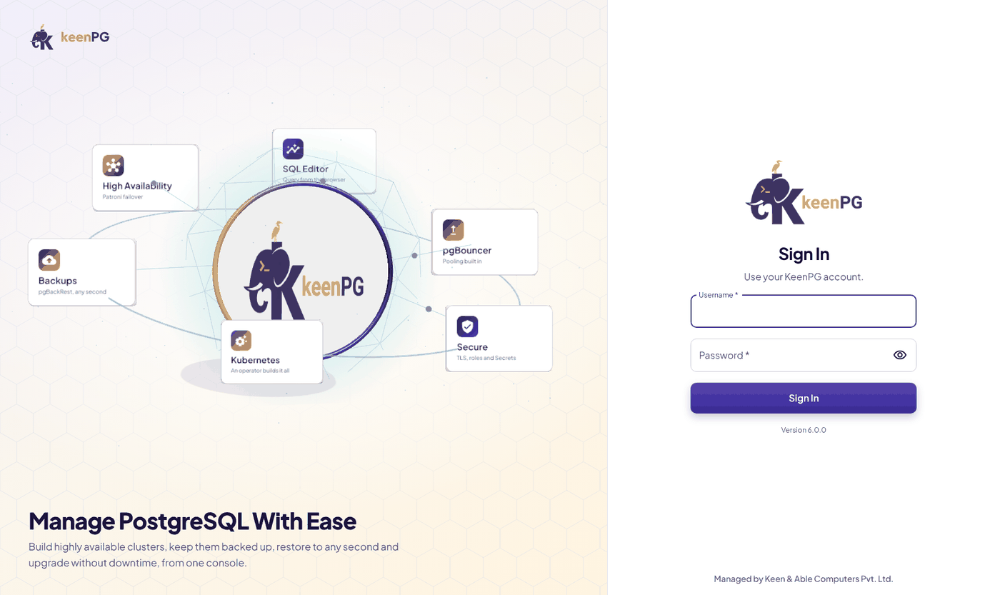
Sign-in page
- Open the console address in your browser.
- Type your username and password, then click Sign In.
The first password
Helm makes a random password for the user admin and keeps it in the Secret keenpgo-console-admin. Read it with:
kubectl -n keenpg-operator get secret keenpgo-console-admin -o jsonpath='{.data.username}' | base64 -d; echo
kubectl -n keenpg-operator get secret keenpgo-console-admin -o jsonpath='{.data.password}' | base64 -d; echo
To choose the password yourself, add --set console.admin.password='Choose-A-Password-1' to helm install.
The Secret is only read once
It is read when the console starts for the first time and there is no admin yet. After that, the password lives in the console's own database. If you change it in the console, the Secret no longer shows it.
Change the admin password on day one
Click your name (top right) → Change password.
You stay signed in for 12 hours. To sign out, click your name → Sign out.
Reset a forgotten password
Forgot the admin password?
Remove the admin user from the console database and restart the console. It then creates admin again with the password from the Secret above. Other users, the audit log and settings are kept.
flowchart LR
A["1. Remove the admin user from the console database"] --> B["2. Restart the console"]
B --> C["3. Console creates admin again with the password from the Secret"]
classDef step fill:#7986cb26,stroke:#7986cb,stroke-width:2px
classDef ok fill:#43a04726,stroke:#43a047,stroke-width:2px
class A,B step
class C okkubectl -n keenpg-operator exec keenpgo-console-db-0 -- sh -c "PGPASSWORD=\"\$POSTGRES_PASSWORD\" \$(ls -d /usr/pgsql-*/bin | tail -1)/psql -h /tmp -U keenpgo -d keenpgo -c \"DELETE FROM console_users WHERE username = 'admin';\""
kubectl -n keenpg-operator rollout restart deploy/keenpgo-console
DELETE 1 means it worked.
Other users forgot their password? An admin resets it in Settings → Users (key icon).
HTTPS and the certificate¶
The console always uses HTTPS. It makes its own self-signed certificate the first time it starts, and keeps it in the Secret keenpgo-console-tls.
- Nothing else is needed: no cert-manager and no extra job. It works the same with Helm, kubectl, Argo CD and OpenShift.
- Every console pod and every restart uses the same certificate. It is valid for 2 years; the console makes a new one 30 days before it ends.
http://on the same port is sent on tohttps://by itself.
Stop the browser warning
Save the certificate and trust it on your computer (it is its own authority):
kubectl -n keenpg-operator get secret keenpgo-console-tls -o jsonpath='{.data.tls\.crt}' | base64 -d > keenpg-console.crt
Then trust it on your system:
-
Windows
- Double-click the file
- Install Certificate
- Local Machine
- Trusted Root Certification Authorities
-
macOS
- Open it in Keychain Access
- System
- Set Always Trust
-
Linux (Chrome / Firefox)
- Browser settings
- Certificates
- Authorities
- Import
Advanced HTTPS setups
By default the certificate is for the console's service names and localhost. To add the IP or name people type in the browser, set KEENPGO_TLS_HOSTS and let the console make a new certificate:
Use this for a certificate from your company's authority or cert-manager.
Put it in the same Secret. The console uses it as it is, never replaces it, and picks up a renewed one within 5 minutes:
Create a passthrough Route, so the browser talks HTTPS straight to the console:
Use this when an Ingress or load balancer already does HTTPS.
It can send plain HTTP to the console with the header X-Forwarded-Proto: https; the console accepts that. Or turn the console's own HTTPS off with KEENPGO_TLS=off.
The screen layout¶
Every page has the same frame:
| Area | What it does |
|---|---|
| Left menu | Opens each page. On small screens it shows only icons; click » at the bottom to open it. Pages with an arrow (Observability) open a list of sub-pages. |
| Project (top left) | Chooses the project you are working in. All projects (the default) shows the clusters of every project you can see. |
| Create cluster (top right) | Starts a new database from any page. |
| Your name (top right) | Change your password, manage users (admins only), sign out. |
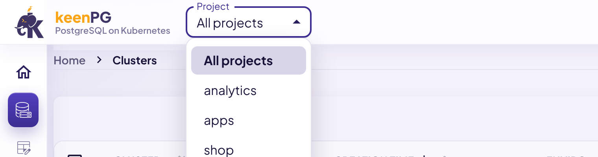
Project list with All projects
Like All namespaces in OpenShift, All projects is first in the list. Pick a project to see only its clusters. The lists of clusters, the SQL editor and Backup & Restore follow the project you pick.
Your role decides what you see
You see only the pages and buttons your role allows. See Users and access.
Home¶
The Home page is your daily check: in one look you see whether everything is fine.
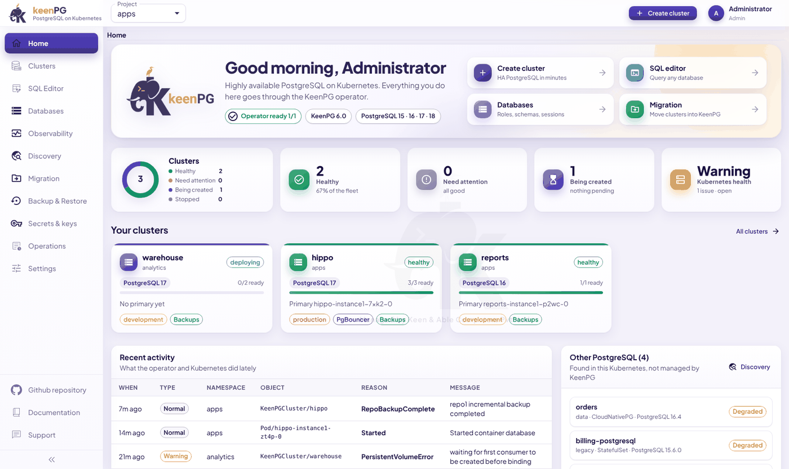
Home page
Top card
- Operator ready 1/1 means the KeenPG operator is running.
- The chips show the PostgreSQL versions you can use.
- The four shortcuts open Create cluster, SQL editor, Databases and Migration.
Count cards
| Card | Meaning |
|---|---|
| Clusters ring | All clusters, split by state. |
| Healthy | Clusters with every pod ready. |
| Need attention | Clusters with a problem. Open them first. |
| Being created | New clusters that are still starting. |
| Kubernetes health | Problems in Kubernetes itself, for example a node that is not ready. |
Your clusters
One card per cluster. Each card shows:
- the PostgreSQL version;
- how many pods are ready (for example
3/3 ready); - the current primary;
- labels such as production, PgBouncer or Backups.
Click a card to open the cluster.
Lower on the page, Recent activity lists what happened lately (for example "backup completed"). Other PostgreSQL lists databases in your Kubernetes that KeenPG does not manage yet.
Create a cluster¶
Click Create cluster (top right). The form has 9 numbered steps. While you fill it, the Summary on the right shows what you will get.
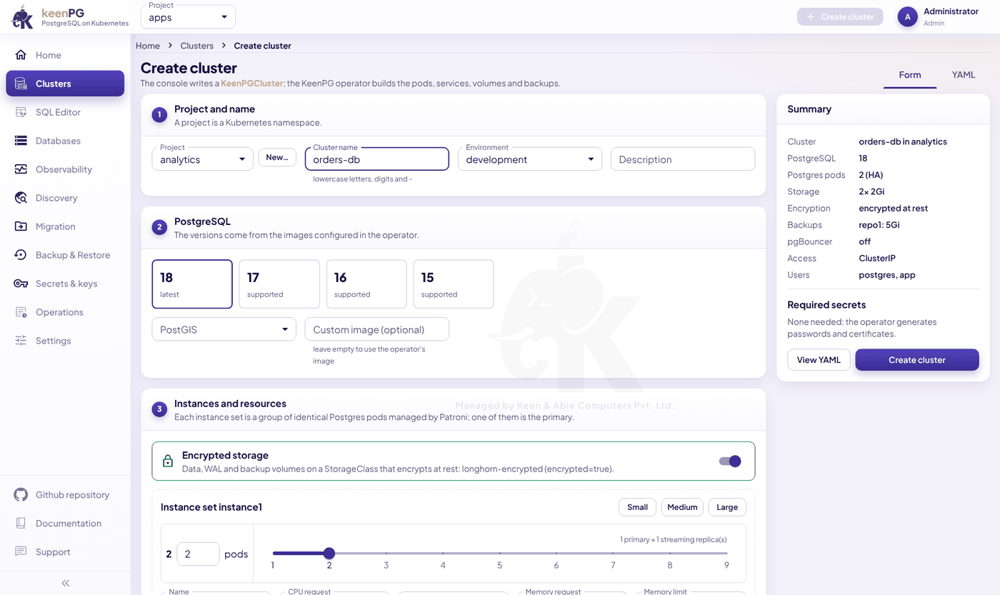
Create cluster: project, name and version
Step 1: Project and name
- Project: where the cluster will live. Click New… to make a new project.
- Cluster name: lowercase letters, digits and
-, for exampleorders-db. You can't change it later. - Environment: development, staging or production. This is a label that helps you sort and find clusters.
- Description: optional, for example "orders and payments".
Step 2: PostgreSQL
- Pick the version (15, 16, 17 or 18). Use the newest unless your application needs an older one.
- PostGIS: pick a version only if you store maps or locations.
- Custom image: leave it empty. KeenPG then uses its own tested image.
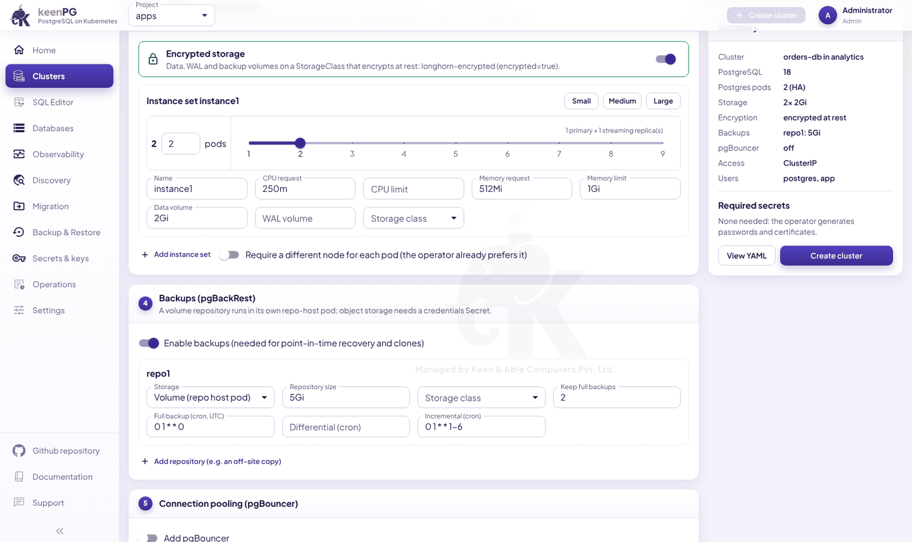
Create cluster: pods, size and backups
Step 3: Instances and resources
- Encrypted storage turns on by itself when your Kubernetes has encrypting disks.
- Pods: how many PostgreSQL servers you get.
1= a single server, with no automatic failover. Fine for testing.2or more = one primary plus replicas, with automatic failover. Use this for production.
- Size: click a preset (table below), or type your own values.
- Require a different node for each pod puts each copy on a different machine, so one broken machine can't take down every copy.
| Preset | CPU | Memory | Disk |
|---|---|---|---|
| Small | 0.25 | 512 MiB | 2 GiB |
| Medium | 1 | 2 GiB | 20 GiB |
| Large | 4 | 8 GiB | 100 GiB |
Step 4: Backups
- Keep Enable backups on. Without backups you can't restore or clone.
- Storage: a volume (a disk inside Kubernetes) or object storage (S3, GCS, Azure). Object storage needs a credentials Secret first, from Secrets & keys.
- Schedules use cron format, in UTC. For example,
0 1 * * 0means every Sunday at 01:00.- Full: a complete copy.
- Differential: changes since the last full backup.
- Incremental: changes since the last backup of any type.
- Keep full backups: how many full backups to keep. Older ones are removed automatically.
Steps 5 to 9 (optional)
| Step | What to set |
|---|---|
| 5. Connection pooling | Turn on pgBouncer if your application opens many connections. |
| 6. Network, security, monitoring | ClusterIP = reachable only inside Kubernetes. NodePort / LoadBalancer = reachable from outside. Monitoring and Logging (below). Extra image pull secrets, your own TLS certificate. |
| 7. Users and databases | Each user gets a database and a generated password. Keep Also create the postgres superuser Secret on to use the SQL editor with full rights. |
| 8. PostgreSQL parameters | Settings such as max_connections. Leave the defaults if you aren't sure. |
| 9. Initial data | Start empty, or start from another cluster's backup, optionally at a point in time. |
Step 6 details: Monitoring and logging
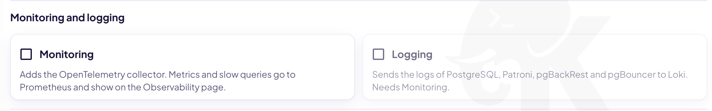
Create cluster: Monitoring and Logging
Both are off unless you tick them:
- Monitoring adds the collector to each pod. Metrics and slow queries go to Prometheus and show on the Grafana dashboards. It works for every PostgreSQL version. It is greyed out until monitoring is installed (
kubectl apply -k config/monitoring). - Logging also sends the logs of PostgreSQL, Patroni, pgBackRest and pgBouncer to Loki. It needs Monitoring. It is greyed out until Loki is installed (
kubectl apply -k config/logging).
You can change both later. See Monitoring and logging.
Finish
Check the Summary, optionally click View YAML to see the exact definition, then click Create cluster.
The new cluster, and a new project, show up straight away; there is no need to reload the page. It shows deploying and is usually ready in 2 to 5 minutes. The first time can take longer, because the images are downloaded.
No passwords to prepare
The Summary shows Required secrets: None needed. The operator creates every password and certificate by itself.
Clusters list¶
Click Clusters in the menu to see every cluster of the project you picked, or of all projects.
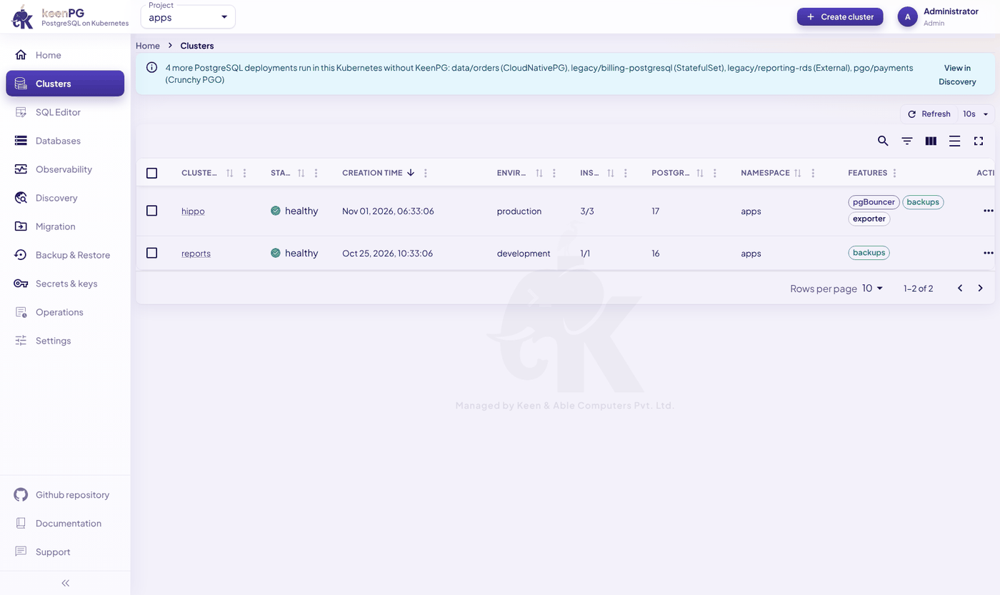
Clusters list
| Column | Meaning |
|---|---|
| Cluster | The name. Click it to open the cluster. |
| Status | healthy, deploying, degraded or stopped. |
| Environment | The label you chose (development, production…). |
| Instances | Ready pods / total pods, for example 3/3. |
| PostgreSQL | Major version. |
| Namespace | The project of the cluster. Useful with All projects. |
| Features | Backups, PgBouncer, monitoring, logging and so on. |
The list refreshes every 10 seconds, and every 5 seconds while a cluster is being created. Use the icons above the table to search, filter or choose columns.
Inside a cluster¶
Open a cluster to see everything about it. The header shows its health, environment, project, version and current primary. The page has 8 tabs.
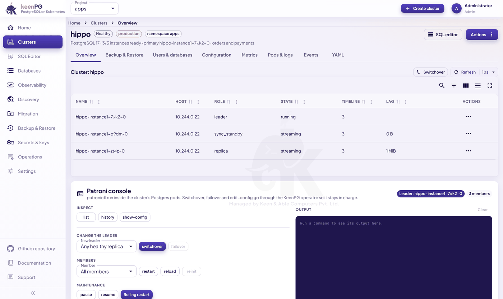
Cluster overview
The tabs¶
| Tab | What it shows and what you can do |
|---|---|
| Overview | Every member with its role (leader, sync_standby, replica), state and lag, the Patroni console (below), services, instance sets and the Features card. |
| Backup & Restore | Backup schedules, the list of backups, and the backup jobs. See Backup and restore. |
| Users & databases | Users the operator manages, with Connection, Edit, Add user and remove. |
| Configuration | PostgreSQL parameters and extra pg_hba access rules. Click Save to apply. |
| Metrics | Uptime, connections, cache hit rate, replication lag, database sizes and the longest-running queries. |
| Pods & logs | Every pod with its status and restarts. Logs opens a pod's log. Delete recreates a stuck pod. |
| Events | What Kubernetes and the operator reported, newest first. Look here first when something is wrong. |
| YAML | The full cluster definition. Advanced users can edit it and click Save. |
Reading the members table¶
- leader is the primary.
- sync_standby is a replica that has every write.
- replica is a normal copy.
- State should be
runningfor the leader andstreamingfor the others. - Lag of
0 Bmeans up to date. A large, growing lag means a replica is falling behind.
flowchart LR
L["leader<br/>state: running"] -->|"every write"| SS["sync_standby<br/>state: streaming<br/>lag: 0 B"]
L -->|"copy"| R["replica<br/>state: streaming<br/>lag: 0 B"]
R -.-> W{"Lag large and growing?"}
W -->|"Yes"| BAD["Replica is falling behind"]
W -->|"No"| GOOD["Up to date"]
classDef step fill:#7986cb26,stroke:#7986cb,stroke-width:2px
classDef ok fill:#43a04726,stroke:#43a047,stroke-width:2px
classDef bad fill:#e5393526,stroke:#e53935,stroke-width:2px
class SS,R,W step
class L,GOOD ok
class BAD badThe Patroni console¶
The panel under the members table runs safe Patroni commands for you. The answer appears in Output.
| Button | What it does |
|---|---|
| list / history / show-config | Show the members, past leader changes, and the current settings. |
| switchover | Moves the leader to a healthy replica, with a short pause in writes. |
| failover | Forces a new leader. Only for emergencies, when the leader is unhealthy. |
| restart / reload | Restarts a member, or reloads its settings without a restart. |
| reinit | Rebuilds a broken replica from scratch from the leader. |
| pause / resume | Turns automatic failover off and on, for planned maintenance. |
| Rolling restart | Restarts every member one by one, replicas first. |
The Actions menu¶
Click Actions (top right of the cluster page).
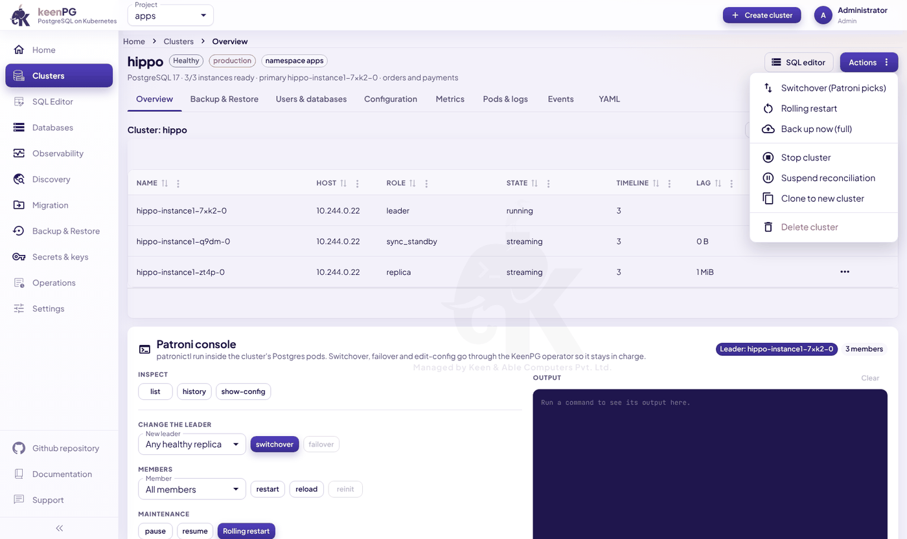
Actions menu
| Action | What happens |
|---|---|
| Switchover (Patroni picks) | Patroni moves the primary to the best replica. Applications reconnect within seconds. |
| Rolling restart | All pods restart one at a time, replicas first. Use it after a setting that needs a restart. |
| Back up now (full) | Starts a full backup immediately. |
| Stop cluster | Shuts down all PostgreSQL pods to save resources. Data is kept. Start cluster brings it back. |
| Suspend reconciliation | The operator stops managing this cluster: it neither changes nor repairs it. Use only for short maintenance. Resume to continue. |
| Clone to new cluster | Makes a new cluster from this one's backups. The original is not changed. |
| Delete cluster | Deletes the cluster, its disks and the backups in its volume repositories. You must type the name to confirm. This can't be undone. |
Delete cluster can't be undone
It removes the disks and the backups in the volume repositories. You must type the cluster name to confirm.
Monitoring and logging¶
Turn them on or off for a running cluster on its Overview tab, in the Features card:
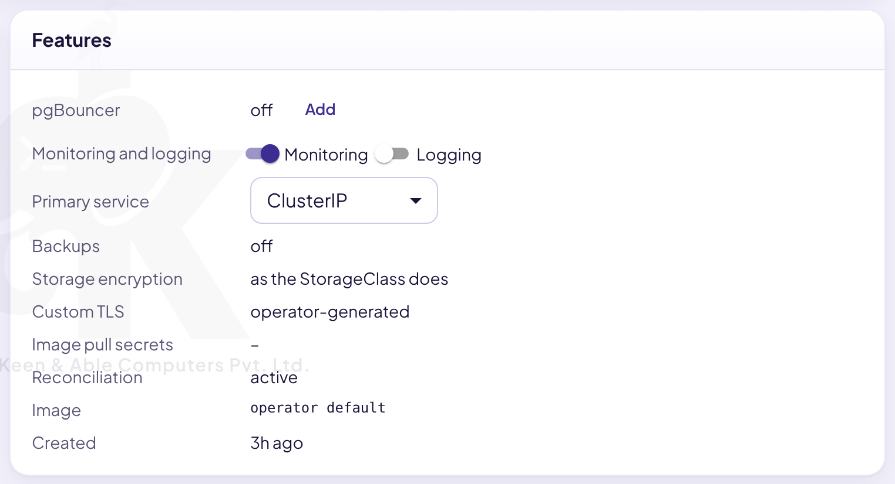
Monitoring and Logging switches
The console asks first and tells you what will happen:
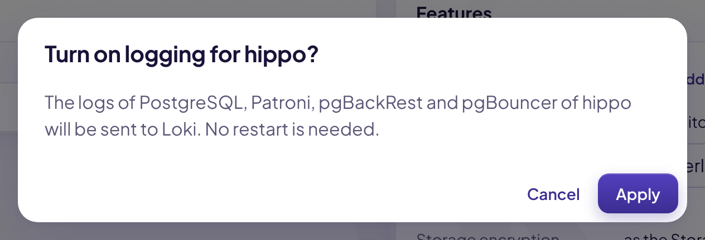
Turn on logging
| Change | What happens |
|---|---|
| Monitoring on | The collector is added to every pod, with pg_stat_statements for slow queries. The PostgreSQL pods restart one by one, replicas first. |
| Monitoring off | The collector is removed, and Logging goes off too. The pods restart one by one. |
| Logging on | Logs go to Loki. No restart is needed, except the very first time: the operator restarts once to turn on log collection, and each monitored cluster then needs one Rolling restart (cluster → Actions) before PostgreSQL writes its own log lines. |
| Logging off | Logs are no longer sent. Logs already in Loki stay until they expire (7 days). |
flowchart LR
subgraph MON["Monitoring"]
direction TB
M1["On"] --> M2["Collector added to every pod"] --> M3["Pods restart one by one, replicas first"]
M4["Off"] --> M5["Collector removed, Logging goes off too"] --> M6["Pods restart one by one"]
end
subgraph LOG["Logging"]
direction TB
L1["On"] --> L2["Logs go to Loki"]
L2 -.-> L3["First time only: operator restarts once, then one Rolling restart per monitored cluster"]
L4["Off"] --> L5["Logs no longer sent, old logs stay 7 days"]
end
MON --> LOG
style MON fill:#9e9e9e1a,stroke:#9e9e9e
style LOG fill:#9e9e9e1a,stroke:#9e9e9e
classDef ok fill:#43a04726,stroke:#43a047,stroke-width:2px
classDef warn fill:#fb8c0026,stroke:#fb8c00,stroke-width:2px
classDef bad fill:#e5393526,stroke:#e53935,stroke-width:2px
class M1,M2,M3,L1,L2 ok
class M4,M5,M6,L4,L5 bad
class L3 warnUsing Helm with logging?
The console turns on the operator's OpenTelemetryLogs setting the first time someone ticks Logging. A later helm upgrade sets it back to what values.yaml says. Once you use logging, put both in your values:
If you forget, Observability › Dashboards shows a warning with a Turn on again button.
Older clusters
Clusters made with the old metrics exporter still work. To move them to the collector, turn Monitoring off and on.
Connect your application¶
Open the cluster → Users & databases → Connection next to the user.
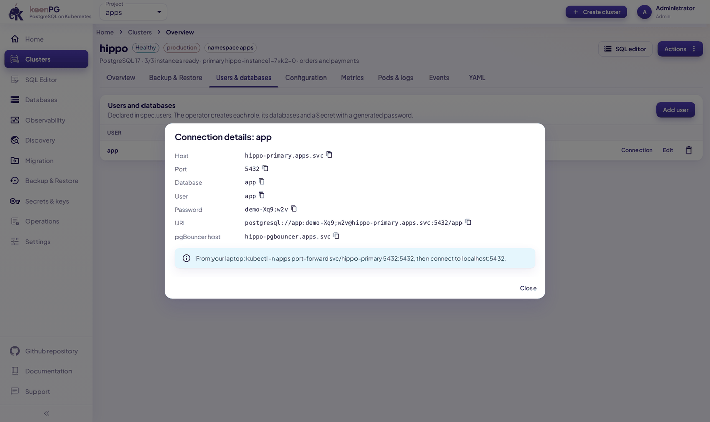
Connection details
The window shows everything an application needs. Click the copy icon next to any value.
| Field | Example | Use |
|---|---|---|
| Host | hippo-primary.apps.svc |
The address of the current primary. |
| Port | 5432 |
The PostgreSQL port. |
| Database / User | app |
What to connect to, and as whom. |
| Password | (generated) | Also stored in the Secret <cluster>-pguser-<user>. |
| URI | postgresql://app:…@hippo-primary.apps.svc:5432/app |
A complete connection string you can paste. |
| pgBouncer host | hippo-pgbouncer.apps.svc |
Use this instead of the host when PgBouncer is on. |
flowchart LR
APP["Application in Kubernetes"] -->|"URI or Secret"| PRI["Primary<br/>cluster-primary"]
APP -.->|"when PgBouncer is on"| PGB["pgBouncer host"]
PGB --> PRI
REP["Reports and dashboards"] -->|"read-only"| RPL["Replicas<br/>cluster-replicas.project.svc"]
LAP["Your laptop"] -->|"kubectl port-forward"| PRI
classDef step fill:#7986cb26,stroke:#7986cb,stroke-width:2px
classDef ok fill:#43a04726,stroke:#43a047,stroke-width:2px
classDef opt fill:#9575cd26,stroke:#9575cd,stroke-width:2px
class APP,REP,LAP step
class PRI,RPL ok
class PGB optFrom an application inside Kubernetes
Use the URI as shown. You can also read it from the Secret <cluster>-pguser-<user>, which has the keys host, port, user, password, dbname, uri and jdbc-uri.
For read-only traffic
For reports and dashboards, use the replicas: <cluster>-replicas.<project>.svc, same port, user and password.
From your laptop
Forward the port first:
kubectl -n <project> port-forward svc/<cluster>-primary 5432:5432
psql "postgresql://<user>:<password>@localhost:5432/<database>"
The primary address never changes
<cluster>-primary always points to the current primary, even right after a failover. Your application doesn't need to change anything.
Backup and restore¶
Open Backup & Restore in the menu (or the cluster's Backup & Restore tab), and choose the cluster at the top right.
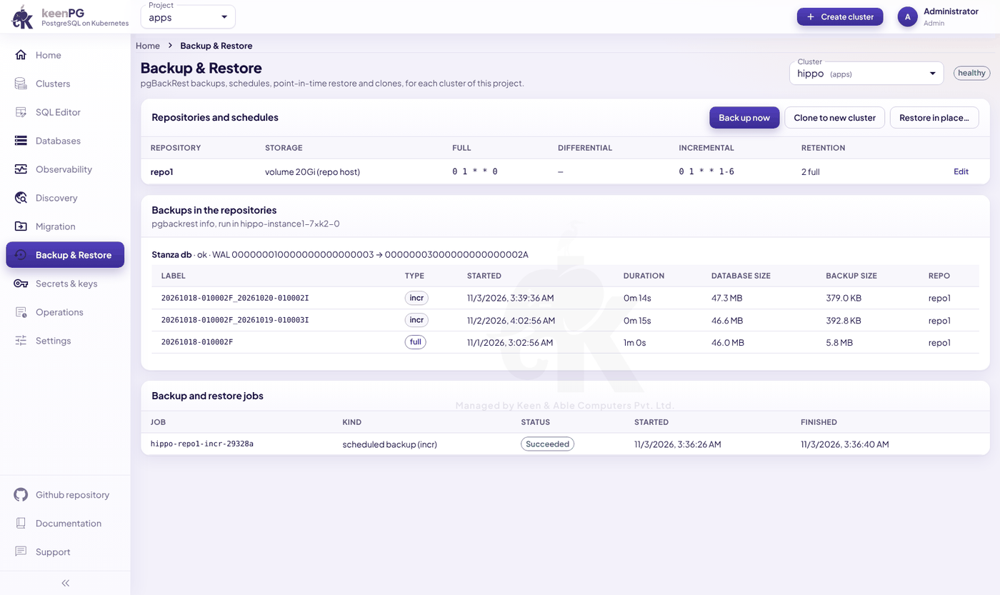
Backup and restore
What the page shows
- Repositories and schedules: where backups go, when each type runs, and how many are kept. Click Edit to change them.
- Backups in the repositories: every backup with its type (
full,diff,incr), start time, duration, database size and backup size. - Backup and restore jobs: each run and whether it Succeeded.
Take a backup now
Click Back up now. It appears under the jobs, then in the backup list when finished. Restore in place
This replaces all data in this cluster with a backup.
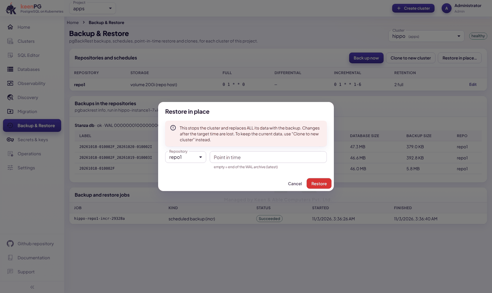
Restore in place
- Click Restore in place….
- Choose the Repository.
- In Point in time, type the moment to go back to, for example
2026-11-02 10:15:00+05:30. Leave it empty to restore to the latest point possible. - Click Restore. The cluster stops, restores and starts again. Changes made after that moment are lost.
Restore in place replaces all data
Changes made after the chosen moment are lost. When in doubt, use Clone to new cluster instead.
Clone to new cluster
This is the safe choice. The Create cluster form opens, already filled in, with the backup as its initial data. Pick a name and, if needed, a point in time, then click Create cluster. The original cluster is not touched.
Use a clone to:
- get back a table deleted by mistake: clone to just before the mistake, then copy the table back;
- test an upgrade or a risky change;
- give developers a copy of production.
SQL Editor¶
Run SQL on any database straight from your browser, on the primary or on a replica.
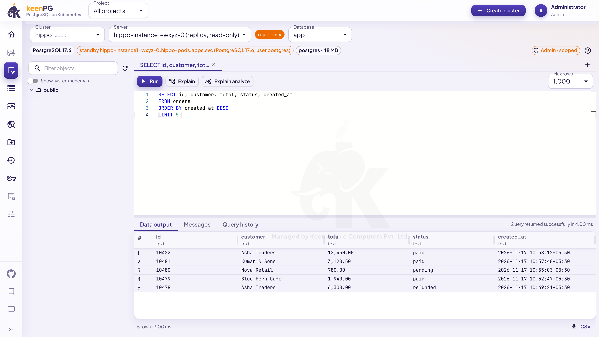
SQL editor on a replica
Run a query
- Choose the Cluster, the Server and the Database at the top.
- Type your SQL. The left panel lists schemas, tables and views; click one to use its name.
- Click Run, or press F5 or Ctrl+Enter. To run only part of the text, select it first.
- Results appear in Data output. Click CSV (bottom right) to download them.
flowchart LR
A["1. Choose Cluster, Server, Database"] --> B["2. Type your SQL"] --> C["3. Run, F5 or Ctrl+Enter"] --> D["4. Data output"] --> E["5. CSV download"]
classDef step fill:#7986cb26,stroke:#7986cb,stroke-width:2px
classDef ok fill:#43a04726,stroke:#43a047,stroke-width:2px
class A,B,C step
class D,E okChoose the server
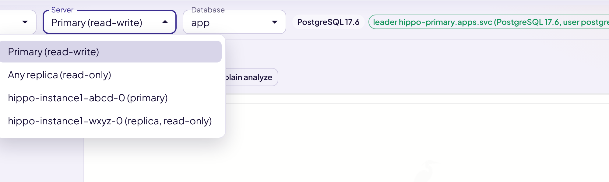
Server list
| Server | Use it for |
|---|---|
| Primary (read-write) | The default. Everything, including changes. |
| Any replica (read-only) | Reports and heavy reads, to keep load off the primary. The replicas share the work. |
One instance, for example hippo-instance1-wxyz-0 (replica, read-only) |
Checking one exact server, for example whether a replica has the latest data. |
On a replica an orange read-only label shows. Replicas are live copies, so queries that change data are refused there. The chip under the cluster tells you which server answered (leader or standby and its address).
More tools
- Explain and Explain analyze show how PostgreSQL runs a query, to help you make it faster.
- Messages shows notices and errors. Query history shows what you ran before.
- + opens another query tab. Max rows limits how many rows come back.
- The badge at the top right shows your access, for example Admin · scoped. Read-only users can only run queries that don't change data.
- With All projects, the cluster list shows each cluster's project next to its name.
Audit log
Every query that can change data is recorded in the audit log.
Databases¶
The Database manager lets you manage what is inside a cluster without writing SQL. Choose the Cluster and Database at the top right.
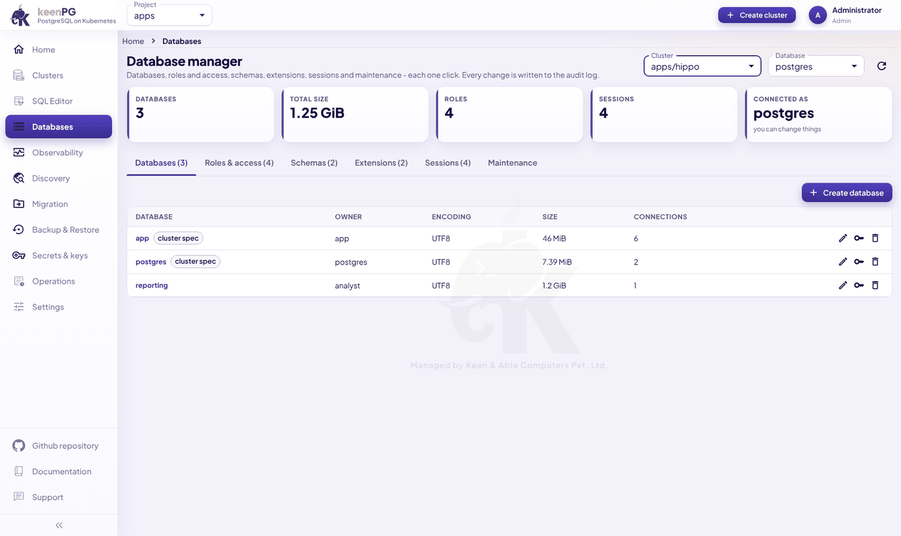
Database manager
The cards show the number of databases, total size, roles, open sessions, and which user the page is connected as.
| Tab | What you can do |
|---|---|
| Databases | Create, rename, change owner, drop. |
| Roles & access | Create users and groups, set passwords and expiry dates, and grant access per schema (connect / read / write / all). |
| Schemas | Create and drop schemas. |
| Extensions | Install, update or remove extensions such as pg_stat_statements. |
| Sessions | See who is connected and what they run. Cancel a query, or disconnect a session. |
| Maintenance | Run VACUUM, ANALYZE, VACUUM FULL or REINDEX, and see the largest tables with their dead rows. |
Items marked cluster spec
These were created in the Create cluster form and are managed by the operator. Change those on the cluster's Users & databases tab instead.
Observability¶
Observability in the left menu opens two pages: Dashboards and Kubernetes.
Dashboards¶
The Grafana dashboards of every cluster, inside the console. You don't sign in to Grafana separately: the console signs you in. Console admins are Grafana admins; everyone else can look but not change dashboards.
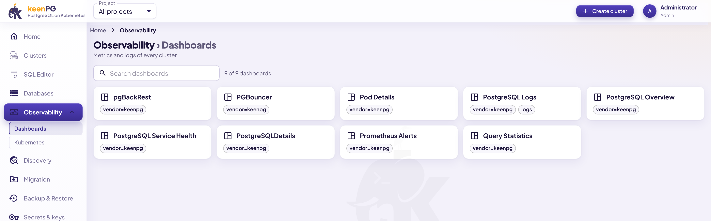
Dashboards
- Open Observability › Dashboards. Type in Search dashboards to find one.
- Click a dashboard. It opens on the same page, with Grafana's own time range and filters.
- All dashboards goes back to the list; Open in a new tab opens it on its own.
| Dashboard | What it shows |
|---|---|
| PostgreSQL Overview | All clusters at a glance. |
| PostgreSQL Details | One cluster in depth: connections, transactions, cache, locks, replication. |
| PostgreSQL Service Health | Saturation, errors and availability. |
| Query Statistics | The slowest and busiest queries (pg_stat_statements). |
| pgBackRest | Backups and WAL archiving. |
| PGBouncer | Pools, client and server connections. |
| Pod Details | CPU, memory, disk and network of each pod. |
| Prometheus Alerts | Alerts that are firing. |
| PostgreSQL Logs | The logs, coloured by level (with Logging on). |
Requirements
The dashboards need monitoring installed (kubectl apply -k config/monitoring) and Monitoring on for the clusters you want to see. Users limited to some projects can't open this page, because the dashboards show every cluster.
Open Grafana on its own
Grafana lives under /grafana/:
Kubernetes¶
The health of the Kubernetes nodes and system pods under your databases.
Discovery¶
Discovery finds other PostgreSQL databases already running in your Kubernetes that KeenPG doesn't manage.
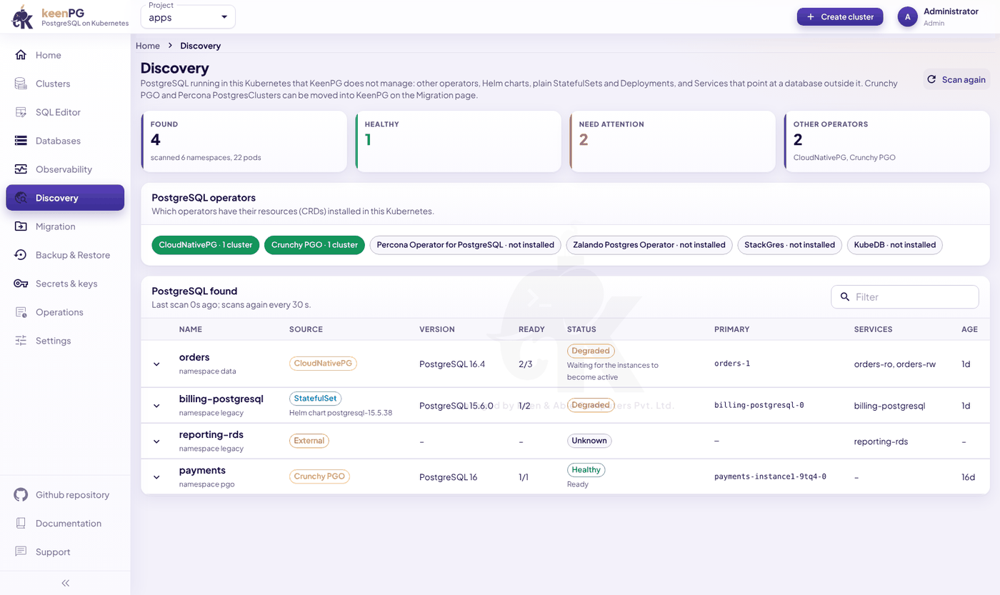
Discovery
- Top cards: how many databases were found, and how many are healthy or need attention.
- PostgreSQL operators: which other operators are installed: CloudNativePG, Crunchy PGO, Percona, Zalando, StackGres, KubeDB.
- PostgreSQL found: each database with its source (an operator, a Helm chart, a plain StatefulSet, or an external service), version, ready pods, status, primary and services. Click the arrow for details.
Discovery scans again every 30 seconds. Crunchy PGO and Percona databases can be moved into KeenPG on the Migration page.
flowchart LR
SC["Discovery scans every 30 seconds"] --> F["Other PostgreSQL found"]
F --> C1["Crunchy PGO"]
F --> C2["Percona"]
F --> C3["CloudNativePG, Zalando, StackGres, KubeDB, Helm, StatefulSet, external"]
C1 --> MG["Move into KeenPG on the Migration page"]
C2 --> MG
classDef step fill:#7986cb26,stroke:#7986cb,stroke-width:2px
classDef ok fill:#43a04726,stroke:#43a047,stroke-width:2px
classDef muted fill:#9e9e9e26,stroke:#9e9e9e,stroke-width:2px
class SC,F step
class C1,C2,MG ok
class C3 mutedMigration¶
Move databases from Crunchy PGO or Percona into KeenPG. KeenPG reads the source's own backups, so the source database is never changed or stopped.
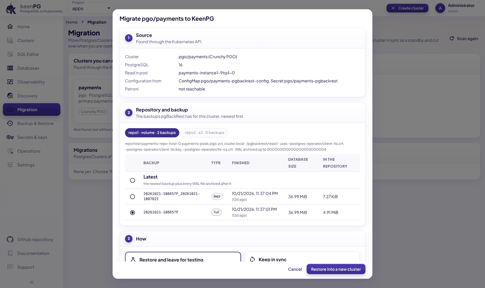
Migration
- Open Migration and click Migrate on the cluster you want to move.
- Source: check the details (cluster, version, pod).
- Repository and backup: choose where to read backups from, and which backup. Latest means the newest backup plus every change after it.
- How:
- Restore and leave for testing: builds a new KeenPG cluster from the backup. The source keeps running. Use this to test first.
- Keep in sync: the new cluster follows the source and keeps copying its changes. When you are ready to switch, click Cut over, and the new cluster becomes a normal primary.
- Click Restore into a new cluster. Progress appears under Migrations.
The new cluster has the same PostgreSQL major version as the source.
Users and access¶
Settings → Users lists everyone who can sign in to the console.
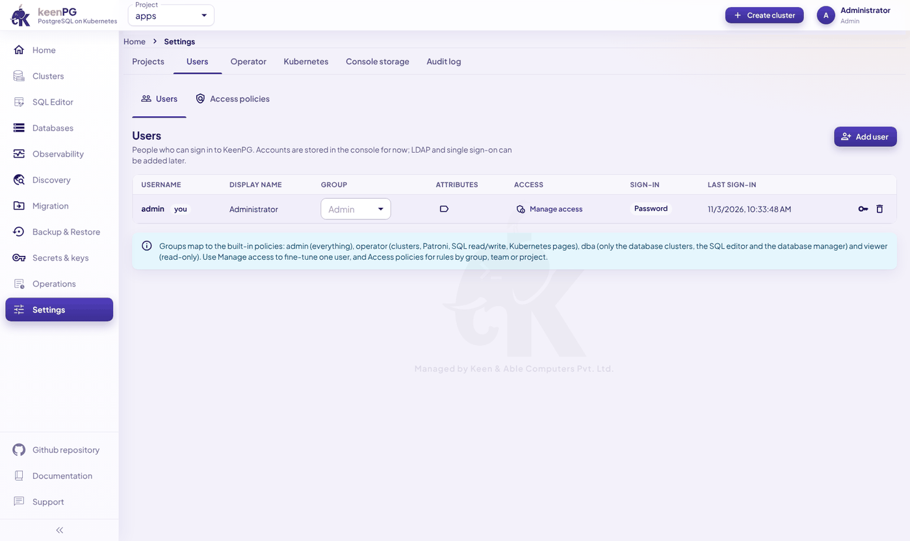
Users
- Add user: create an account.
- Group: decides what the person can do (table below).
- Manage access: fine-tune one person. Allow or deny single permissions, or limit them to some projects.
- Key icon: reset the person's password. Trash icon: remove the person.
| Group | Can do |
|---|---|
| Admin | Everything: users, access policies, settings, audit log, SQL as superuser, Grafana admin. |
| Operator | Create and run clusters, Patroni actions, backups, Secrets, Kubernetes pages, discovery and migration, SQL read/write. |
| DBA | Only the database clusters, the SQL editor (as superuser) and the database manager. No Kubernetes pages, Secrets or settings. |
| Viewer | Read only. |
The Access policies tab holds rules for groups, teams or single users, optionally limited to some projects, clusters or databases. Deny wins over allow. The Administrators policy can't be changed, so an admin can never lock themselves out.
Other pages¶
| Page | What it is for |
|---|---|
| Secrets & keys | Create what some features need before you create a cluster: a registry login for private images, S3 / GCS / Azure credentials for backups, or a TLS key pair. Database passwords are not made here; the operator creates them. |
| Operations | All backup and restore jobs, and all events, for every cluster, in one list. Warning lines need attention. |
| Settings → Projects | The projects (namespaces) KeenPG uses. Add project makes a new one. |
| Settings → Operator | The operator's state and the image used for each PostgreSQL version and tool. |
| Settings → Kubernetes | Storage classes (disk types, and whether they can grow) and the nodes. |
| Settings → Console storage | The console's own small database (users, sessions, audit log) and its disk. Click Increase size if it fills up. |
| Settings → Audit log | Every change and every SQL query that changes data: when, who, what. Kept for 180 days by default. |
Upgrade the console¶
helm upgrade keenpg ./keenpg-operator -n keenpg-operator --reuse-values
kubectl -n keenpg-operator rollout status deploy/keenpgo-console
Then reload the browser with Ctrl+Shift+R, so it doesn't keep the old page.
- Your users, settings, audit log, the admin password and the HTTPS certificate are kept.
- If the image keeps the same tag (for example
v6.0), make Kubernetes download it again: set the console's image pull policy toAlwaysin your values, or runkubectl -n keenpg-operator rollout restart deploy/keenpgo-console. - Using logging? Make sure
operator.featureGatesstill saysOpenTelemetryMetrics=true,OpenTelemetryLogs=true.
Common tasks¶
| I want to… | Do this |
|---|---|
| Get the admin password | kubectl -n keenpg-operator get secret keenpgo-console-admin -o jsonpath='{.data.password}' | base64 -d (see Sign in) |
| See the clusters of every project | Project (top left) → All projects. |
| Create a database for a new app | Create cluster → fill steps 1–7 → Create cluster. |
| Get my app's connection details | Cluster → Users & databases → Connection. |
| Run a report without loading the primary | SQL Editor → Server → Any replica (read-only). |
| Back up before a risky change | Cluster → Actions → Back up now (full). |
| Recover data deleted by mistake | Backup & Restore → Clone to new cluster → a time just before the mistake → copy the data back. |
| Add a replica | Cluster → YAML → raise replicas under instances → Save. |
| Change a PostgreSQL setting | Cluster → Configuration → change → Save. |
| Move the primary before maintenance | Cluster → Actions → Switchover. |
| Pause a test database to save resources | Cluster → Actions → Stop cluster (data is kept). |
| Turn on metrics or logs for a cluster | Cluster → Overview → Features → Monitoring / Logging. |
| See the dashboards | Observability → Dashboards → click a dashboard. |
| Find slow queries | Observability → Dashboards → Query Statistics, or cluster → Metrics. |
| Read a cluster's logs | Observability → Dashboards → PostgreSQL Logs (Logging on). |
| Find out why a cluster isn't healthy | Cluster → Events, then Pods & logs. |
| Give a colleague read-only access | Settings → Users → Add user → group Viewer. |
| See who changed something | Settings → Audit log. |
Troubleshooting¶
Start here when something is wrong:
| What you see | What it means | What to do |
|---|---|---|
| Pods show ImagePullBackOff or 401 Unauthorized | Kubernetes can't download the images. | The registry login is missing or wrong. Run helm upgrade with pullSecret.create=true and your auth.json, then delete the stuck pods. |
| manifest unknown / not found | That image version doesn't exist in the registry. | Contact KeenPG support. |
| The browser says "Your connection is not private" | The console's certificate is self-signed. | Expected. Click Advanced → Continue, or trust the certificate (see HTTPS). |
"Wrong username or password" for admin |
The password is not admin: Helm made a random one. |
Read it from the Secret keenpgo-console-admin (see Sign in). Still wrong? Reset the admin as shown there. |
| Console log: password authentication failed for user "keenpgo" | The Secret keenpgo-console-db no longer matches the console database (for example it was deleted and made again). |
Put the old password back into the Secret, or give the database the new one. Ask KeenPG support for the exact commands for your case. |
| A pod stays Pending, or a PersistentVolumeError event | No disk could be created. | Check Settings → Kubernetes for a storage class with free space. |
| A MissingRequiredImage event | No image is set for that PostgreSQL version. | Choose a version offered in the Create cluster form. |
| The cluster stays deploying | Something is blocking the start. | Read the cluster's Events tab, then Pods & logs. |
| A replica's lag keeps growing | The replica is falling behind or stuck. | Overview → Patroni console → choose the member → reinit. |
| Monitoring or Logging is greyed out | Prometheus or Loki is not installed. | kubectl apply -k config/monitoring (and config/logging for logs). |
| Dashboards: "The dashboards are not available" | Grafana is not installed or not reachable. | kubectl apply -k config/monitoring. If Grafana runs elsewhere, set KEENPGO_GRAFANA_URL on the console. |
| Dashboards: a panel says origin not allowed | A proxy in front of the console changes the address. | kubectl -n keenpg-operator set env deploy/keenpgo-grafana GF_SECURITY_CSRF_TRUSTED_ORIGINS=<your console address> |
| Dashboards: "the operator has log collection turned off" | A helm upgrade removed the logging setting. |
Click Turn on again, and add OpenTelemetryLogs=true to operator.featureGates in your values. |
| Logging is on, but no PostgreSQL log lines (Patroni lines arrive) | PostgreSQL has not restarted since log collection was turned on. | Cluster → Actions → Rolling restart. |
| SQL editor: "cannot execute … in a read-only transaction" | You ran a change on a replica. | Pick Primary (read-write) in Server. |
| "No console database is configured" | The console's own database isn't running. | Check the pod keenpgo-console-db-0 in the keenpg-operator project. |
Still stuck?
Send this output to KeenPG support:
kubectl -n <project> get keenpgcluster <cluster> -o yaml
kubectl -n <project> get pods,pvc,events
kubectl -n keenpg-operator logs deploy/keenpgo --tail=200
kubectl -n keenpg-operator logs deploy/keenpgo-console --tail=200
Be careful¶
Read these before you change anything in production
- Deleting a cluster is permanent. It removes the cluster's disks and the backups in its volume repositories. Keep important backups in object storage too, or clone before you delete.
- Restore in place replaces all data. When in doubt, use Clone to new cluster.
- Use 2 or more pods for production. With one pod there is no automatic failover.
- Keep backups on. Without them you can't restore or clone.
- Change the admin password on the first day, and never share it in chats or tickets.
- Turning Monitoring on or off restarts the PostgreSQL pods one by one. Do it in a quiet hour for busy production databases.
- Suspend reconciliation only for short maintenance. While suspended, the operator doesn't repair the cluster.
- Don't delete the Secrets
keenpgo-console-dborkeenpgo-console-admin. The console database keeps its first password; a new Secret won't match it.